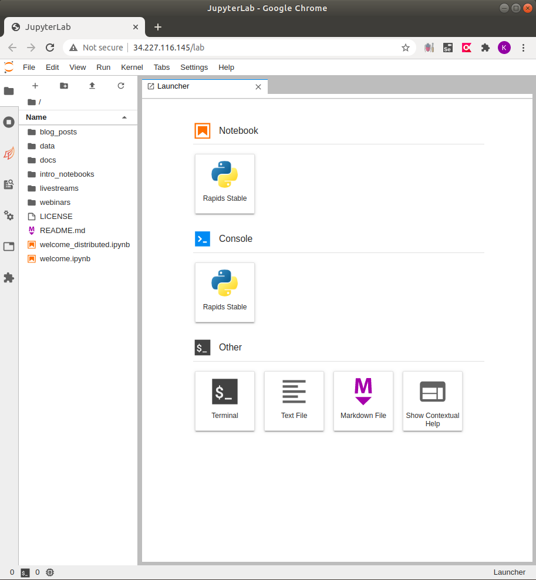

Cluster¶
If your application/data requires more compute power than can fit on a single GPU, BlazingSQL Notebooks provide private clusters: a managed resource and software environments with everything neccesary to have RAPIDS and BlazingSQL on the cloud. Using Blazing Notebooks is the easiest way to get started developing on GPUs!
Create a cluster¶
To get started with private clusters you will need credits in your account; check Billing section to learn how.
Creating clusters on BlazingSQL Notebooks requires only 3 parameters to start with:
Cluster name: A recognizable name for your cluster.
Size: Select the number of GPUs from dropdown. See Supported cluster sizes and GPUs section below.
Auto Suspend: Time the cluster will shutdown if not being used.
Some default values are preset but you can adjust them if you click on the Advanced options.
Available options:
Region: defults to us-east-1. Available regions are us-east-1, us-east-2, us-west-1, us-west-1.
Environment: defaults to “rapids-stable”. Built-in environments are rapids-stable and rapids-nightly. To learn how to create environments refer to the Environments part.
Supported cluster sizes and GPUs¶
To provide flexibility and help with handling any type of workload we support clusters that can be comprised of 1 to 64 GPUs. The table below shows the available SKUs with their capabilities and price.
SKU |
Number of GPUs |
GPU RAM |
Credits per hour |
|---|---|---|---|
X-Small |
1 |
16GB |
1 credit |
Small |
2 |
32GB |
2 credits |
Medium |
4 |
64GB |
4 credits |
Large |
8 |
128GB |
8 credits |
X-Large |
16 |
256GB |
16 credits |
2X-Large |
32 |
512GB |
32 credits |
3X-Large |
64 |
1024GB |
64 credits |
Blazing Notebooks runs on NVIDIA T4 GPUs, each with 16GB of RAM.
Start cluster¶
If you create a new cluster, once it is deployed it will be returned to you in a running state.
After you shut down the cluster, either manually or the auto-suspend did that for you (see Manual and auto-suspend), you can start a cluster in two ways:
In the tiles view click on Actions and select Start
In the list view click on the Play button.
Delete cluster¶
If you want to delete cluster, there are two ways to achieve that.
In the tiles view click on Actions and select Delete.
In the list view click on the Delete button.
To finalize the deletion of a cluster you need to confirm that in the pop-up window.
Manual and auto-suspend¶
You can stop your cluster manually. However, if by any chance you forget, the auto-suspend process will turn off your cluster automatically after the predefined period of time.
Manual suspend¶
To stop you cluster manually you have two ways:
In the tiles view click on Actions and select Stop.
In the list view click on the Stop button.
Either way you choose, once you click the “Stop” button the cluster status will change automatically from “Running” to “Stopping Cluster (Manual)”.
After the proccess finishes the status of the cluster will be “Stopped”.
Auto-suspend¶
The auto-suspend process will shut down your cluster after the predefined time of inactivity specified during the cluster creation.
Once the cluster starts shutting down, the status will change from “Running” to “Stopping Cluster (Auto)”.
Once the proccess finishes the status of the cluster will be “Stopped”.
Launching Jupyter Lab¶
To launch the workspace / Jupyter Lab click the Launch button.
Then you will be redirected to Jupyter Lab window. All the dependencies that are necessary to work with BlazingSQL and RAPIDS are already here (see Environments part for more details).
